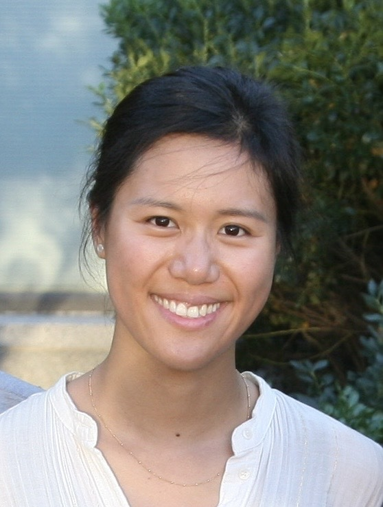

Senior Research Scientist, Dept of Neuroscience, Yale School of Medicine
Lecturer, Dept of Computer Science, Yale SEAS

My long-term career goal is to leverage artificial intelligence to advance neuroscience research. I have a solid background in ML/AI and over 10 years of experience across both academia and industry. In my doctoral research, I spearheaded a multi-lab project analyzing brain-wide activity in larval zebrafish (Chen et al., 2018). As Data Science lead at a biotech startup, I developed automated pipelines for precision cell manufacturing. As a Research Scientist at Amazon Alexa AI, I enhanced device and cloud-based deep learning models for Alexa Guard, implemented across Echo devices and Astro robots. I collaborated with engineering teams to refine science infrastructure and automation workflows, and led science initiatives for production features with cross-functional team coordination. I have also performed machine learning research in acoustic event detection and filed US patents on my work at Amazon.
Meanwhile, I embraced the opportunity to share my knowledge and experiences through teaching. I have taught graduate-level classes on AI and data visualization at Northeastern University as a part-time lecturer. With my recent transition to Yale, I teach courses on AI applications with the Computer Science Department both at the graduate and undergraduate level, and perform research on connectomics with the Kuan Lab in the Neuroscience Department.
Spring 2025 · CPSC 776: Topics in Industrial AI Applications · Graduate Seminar · speakers
Fall 2024 · CPSC 171: Introduction to AI Applications · Yale College
Spring 2024 · CPSC 776: Topics in Industrial AI Applications · Graduate Seminar · speakers
Ph.D. in Biology (systems and computational neuroscience), Harvard University
B.Sc. in Biochemistry, Hong Kong University of Science & Technology